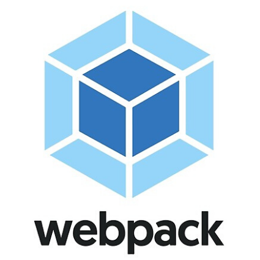
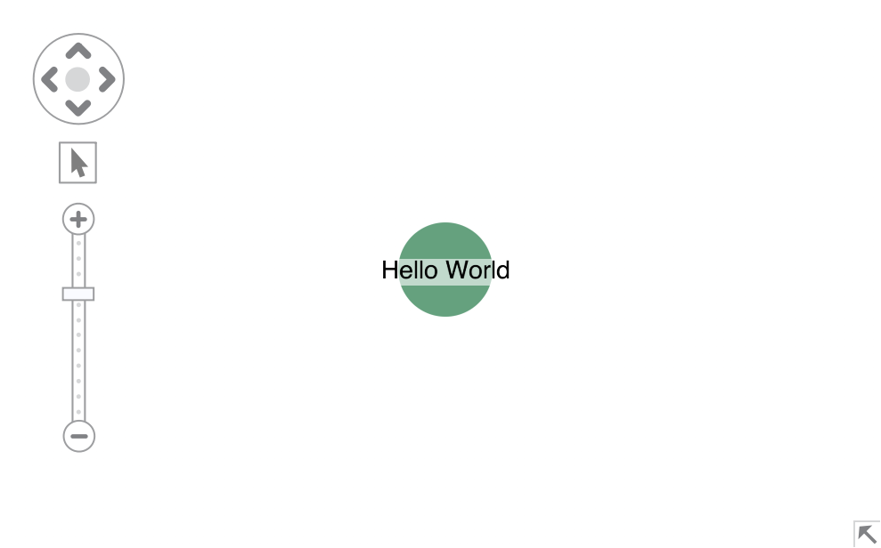

Using Nexus with Webpack

Introduction#
This quick start guide shows how to create a simple Nexus visualisation with Webpack. When you are finished, you will have a simple interactive Nexus chart.
Note that if you store Nexus in your source control you must ensure it's not publicly available. Read more about the Obfuscation Requirements before deploying your application.
Requirements#
To follow this tutorial, you should have the latest version of
Node.js installed.
To check your version, you can run node -v in the console.
Step 1: Create a new package#
Create a new directory named my-app and create a new npm package from this directory:
mkdir my-app && cd my-app
npm init -yIn the terminal from the my-app directory, add the following Webpack dependencies:
npm add -D webpack@^5 webpack-cli@^4 html-webpack-plugin@^5 webpack-dev-server@^4 webpack-merge@^5| Dependency | Description |
|---|---|
| Webpack | The Webpack module bundler. |
| webpack-cli | Adds a set of commands for Webpack configuration. |
| html-webpack-plugin | Simplifies creating HTML output files to be served to the generated bundles. |
| webpack-dev-server | Allows using Webpack with a live-reloading development server. |
| webpack-merge | Concatenates arrays and merges configuration objects to help manage configuration. |
Step 2: Create a boilerplate application#
Create a new src folder inside the my-app directory.
Inside my-app/src, create a new template.html file with the following contents:
<!DOCTYPE html>
<html>
<head>
<meta charset="UTF-8">
</head>
<body>
<!-- This is the HTML element that will contain the Nexus component -->
<div id='kl' style='width: 800px; height: 600px;'></div>
</body>
</html>Also inside my-app/src, create new a index.js file with the following contents:
console.info('Hello World!');The index.js file will eventually contain our application code.
Back inside the main my-app directory, create a new webpack.config.mjs file containing Webpack configuration:
import { merge } from 'webpack-merge';
import HtmlWebpackPlugin from 'html-webpack-plugin';
/** Create an absolute path from the current file */
const absPath = path => new URL(path, import.meta.url).pathname;
const common = {
entry: {
main: absPath('./src/index.js'),
},
plugins: [
new HtmlWebpackPlugin({
template: absPath('./src/template.html'),
filename: 'index.html',
}),
],
};
const development = {
mode: 'development',
devServer: {
static: {
directory: './dist',
},
port: 8000,
open: true,
compress: true,
hot: true
},
devtool: 'eval-source-map'
};
export default merge(common, development);Step 3: Run a web server#
To configure an easy way of starting the dev server, add the following script to the existing file my-app/package.json:
{
"scripts": {
"start:dev": "webpack-dev-server --progress"
}
}After this you can start the dev server by running this command:
npm run start:devThis will open a new browser window. In the developer tools console you should see the line:
Hello World!Step 4: Create a chart#
Now we'll integrate Nexus into the application. Download the Nexus package from the link below and place it in the my-app directory.
Download Nexus 7.5.0-6286156683Next, open a new terminal window from the my-app directory and add Nexus as a package dependency:
npm add file:./graph-nexus-1.0.0.tgzChange my-app/src/index.js to import Nexus and load a chart containing one node:
import GraphNexus from 'graph-nexus';
async function main() {
const chart = await GraphNexus.create({ container: 'kl' });
await chart.load({
type: 'LinkChart',
items: [{ id: 'id1', type: 'node', c: '#43976C', t: 'Hello World' }]
});
chart.zoom('fit');
}
main();You should now see a simple Nexus chart in your browser:

This is your environment to develop your application.
Step 5: Bundle your files#
To build an optimised, production-ready application we'd like a minified bundle without development-only Webpack runtime files.
To do this we'll split our configuration into two parts: development and production.
The webpack-merge
dependency (which we installed earlier) and the NODE_ENV environment variable will help us do this.
Add a production configuration to my-app/webpack.config.mjs which will output the application assets to ./dist:
const production = {
mode: 'production',
output: {
path: absPath('./dist'),
filename: '[name].bundle.js',
},
performance: {
// Suppress warnings about bundle/asset sizes
maxEntrypointSize: 1024000,
maxAssetSize: 1024000
},
optimization: {
minimize: true
},
};And replace export default which will enable the production build when NODE_ENV equals 'production':
export default merge(
common,
process.env.NODE_ENV === production.mode ? production : development
);And then add 2 more scripts to my-app/package.json:
{
"scripts": {
"start:dev": "webpack-dev-server --progress", // added in step 3
"build": "NODE_ENV=production webpack",
"start:prod": "serve ./dist"
}
}In this tutorial we'll use serve to host the production assets. To install it, run:
npm add serve@^13Finally, run the commands to build the production assets and start the production server:
npm run build && npm run start:prodYou should now have a simple Nexus application bundled with Webpack, with both a development and production environment.